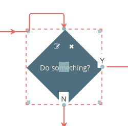

The Flowchart Builder application imports a basic set of tools to help with the positioning and resizing of nodes.
These are in the file jsPlumbToolkit-drawing-x.x.x.js. These are not part of the Toolkit core but while writing
this functionality for the Flowchart Builder it became apparent that it might be useful if it were externalized.
The drawing tools perform two main functions: they automatically decorate selected nodes with resize handles, a visual indicator of selected state, and a drag handle, and they provide the ability for a user to resize a node.
You will need to import the drawing tools script:
<script src="jsPlumbToolkit-drawing-x.x.x.js"></script>
But for the tools to work you also need to ensure that you are using the default templating engine - Rotors.
// first get a Surface
var surface = someToolkitInstance.render({
...
});
// then initialize the drawing tools
new jsPlumbToolkit.DrawingTools({renderer: surface});
Now, whenever a node is added to the underlying Toolkit's currentSelection, the drawing tools will add an appropriate class to it, and remove it once the node is no longer selected.
Here's what the defaults look like - this is a selected node in the Flowchart Builder application:

By default, the drawing tools store a node's current position using the parameters left and top in the node's data, and the size of the node as w and h. This can be overridden in the constructor:
new jsPlumbToolkit.DrawingTools({
renderer: surface,
widthAttribute:"width",
heightAttribute:"height",
leftAttribute:"x",
topAttribute:"y"
});
There are defaults for all of these classes defined in jsPlumbToolkit-defaults.css.
| Class | Explanation |
|---|---|
| jtk-draw-skeleton | Assigned to the element that is drawn around some other element when it is selected |
| jtk-draw-handle | Assigned to every handle (top left, top right, bottom left, bottom right, center) in a draw skeleton. |
| jtk-draw-handle-tl | Assigned to the top left handle in a draw skeleton |
| jtk-draw-handle-tr | Assigned to the top right handle in a draw skeleton |
| jtk-draw-handle-bl | Assigned to the bottom left handle in a draw skeleton |
| jtk-draw-handle-br | Assigned to the bottom right handle in a draw skeleton |
| jtk-draw-drag | Assigned to the center handle in a draw skeleton (the handle by which the element may be dragged) |
| jtk-draw-select-defeat | Added to the document body on drag resize start and removed at the end of resizing. Its purpose is to switch off text selection on all elements while the user is resizing an element. |